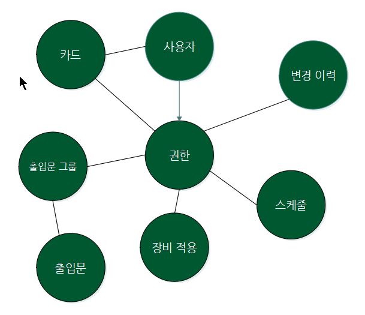
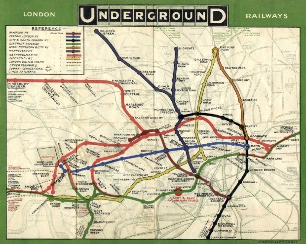
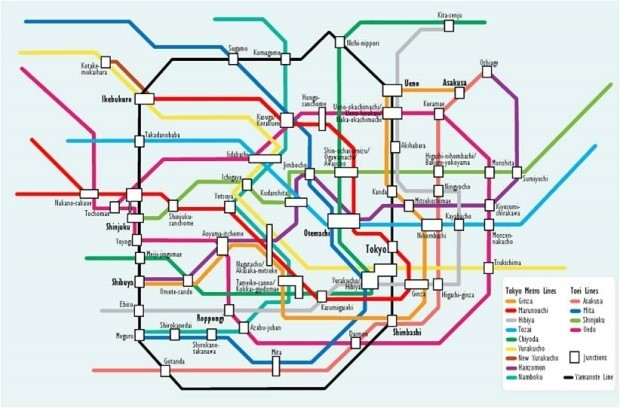
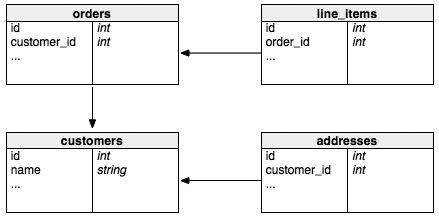
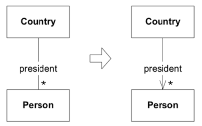
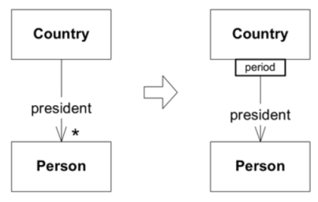

개요
성공한 프로젝트의 공통적인 특징
- 반복적 설계를 거쳐 발전
- 프로젝트의 일부분이 된 풍부한 도메인 모델이 있다.
애플리케이션에서 가장 중요한 복잡성은 기술적인 것이 아니라, 사용자의 활동이나 업무에 해당하는 도메인 자체다.
- 도메인과 도메인 로직에 집중해야 한다.
- 복잡한 도메인 설계는 모델을 기반으로 해야 한다.
도메인
사용자가 프로그램을 사용하는 대상 영역. 즉, 소프트웨어가 해결하고자 하는 문제 영역
어떤 도메인에는 물리적인 요소가 수반되기도 하는데, 이를테면 출입통제 시스템에는 출입통제를 이용하는 실제 사용자가 있다. 반면 어떤 도메인은 실체가 없는데, 출입통제 시스템에서 사용자에게 할당된 권한이 이에 해당한다.

모델

초기의 지하철 노선도는 지도로 만들어졌는데, 이러한 지도는 승객들이 이용하는 데 많은 불편을 주었다. 노선지도로 행선지를 찾아가는 것은 미로속에서 길을 찾는 것만큼이나 어려웠고 차를 갈아타야 할 경우에는 어려움이 가중되었다.

그러던중 1931년,설계자인 헨리 C베크는 노선의 실제 위치를 따라야 한다는 생각을 배제하고 역들의 상관관계만을 보여주었다. 역의 위치와 갈아타는 방법, 그리고 가장 복잡한 중심지역을 확대시켜서 보여주었다.
모델은 대상을 단순화한 것이다.
- 어떤 사실을 해석한 것
- 문제 해결을 위해 중요한 내용만을 추상화
- 중요하지 않은 부분은 숨김
애플리케이션에서 도메인들은 매우 복잡하므로 이러한 도메인을 제대로 이해하기 위해서는 알아야할 지식이 많다. 모델은 이러한 부담을 해소하기 위한 도구다. 모델은 지식을 단순화하고 구조화 한다. 우리는 적절한 모델을 토대로 정보를 이해하고, 문제 자체에 집중할 수 있다.
모델의 유용성
- 모델과 핵심 설계는 서로 영향을 주며 구체화 된다.
- 모델은 모든 팀 구성원이 사용하는 언어의 중추다.
- 모델은 지식의 정수만을 뽑아낸 것이다.
계층형 아키텍처
경험과 관례를 바탕으로 널리 받아들여지는 계층화가 어느 정도 정해졌다. 대다수의 성공적인 아키텍처에서는 아래의 네 가지 개념적 계층으로 나늰다.

사용자 인터페이스 (표현 계층) : 사용자에게 정보를 보여주고, 사용자의 요청을 받는다.
응용 계층 : 로직을 직접 수행하지 않고, 도메인 모델에 로직 수행을 위임한다.
도메인 계층 : 도메인 모델을 구현하며, 도메인의 핵심 로직이 담겨 있다.
인프라스트럭처 계층 : 구현 기술에 대한 것을 다룬다. (e.g. DB연동, 메시지 큐 연동 등)
계층화의 핵심 원칙은 한 계층의 모든 요소는 같은 계층이나 "아래" 위치한 요소에만 의존한다는 것이다. 도메인 모델과 관련된 코드는 모두 한 계층에 모으고 사용자 인터페이스 코드나 애플리케이션 코드, 인프라스트럭처 코드와 격리해야 한다.
도메인 객체는 도메인 모델을 표현하는 것에만 집중할 수 있다. 이로써 모델은 진화를 거듭해 본질적인 업무 지식을 포착해서 해당 업무 지식이 효과를 발휘할 수 있을 만큼 풍부하고 명확해 진다.
계층 간 관계 설정
계층 구조는 그 특성상 상위 계층에서 하위 계층으로의 의존만 존재하고 하위 계층은 상위 계층에 의존하지 않는다.
하위 계층에서 상위 계층으로 소통해야 할 경우에는 콜백이나, Observer 패턴 처럼 계층 간에 관계를 맺어주는 아키텍처 패턴을 활용 할 수 있다.
계층 구조를 엄격하게 적용하면 상위 계층은 바로 아래의 계층에만 의존을 가져야 하지만 구현의 편리함을 위해 계층 구조를 유연하게 적용한다. 예를 들어, 응용 계층은 바로 아래 계층인 도메인 계층에 의존하지만 외부 시스템과의 연동을 위해 더 아래 계층인 인프라스트럭처 계층에 의존하기도 한다.
그림
이런 계층 구조를 사용하는 것은 직관적으로 이해하기 쉽다. 하지만 표현, 응용, 도메인 계층이 상세한 구현 기술을 다루는 인프라스트럭처 계층에 종속된다.
다음은 출입이력 전송 예로 인프라스트럭처 영역의 코드 이다.
public class MessagingEngine
{
private IModel channel;
public MessagingEngine(string queueName)
{
var factory = new ConnectionFactory() { HostName = "localhost" };
using (var connection = factory.CreateConnection())
channel = connection.CreateModel();
channel.QueueDeclare(queue: queueName,
durable: false,
exclusive: false,
autoDelete: false,
arguments: null);
}
public void Publish(string message, string routingKey)
{
var body = Encoding.UTF8.GetBytes(message);
channel.BasicPublish(exchange: "",
routingKey: routingKey,
basicProperties: null,
body: body);
}
}
응용 영역은 출입이력 전송을 위해 인프라스트럭처 영역의 MessagingEngine을 사용 한다.
DIP 관련 나중에 작성
소프트웨어에서 표현되는 모델
연관 관계

모델링과 실제 구현간의 상호작용은 여러 객체 간의 연관관계에서 특히 까다롭다.
설계에는 어떤 특정한 탐색 메커니즘을 명시해야 하며, 그러한 메커니즘의 행위는 모델 내의 연관관계와 일치해야 한다.
현실세계에는 수많은 다대다(many-to-many) 연관관계가 있으며, 그중 상당수는 애초부터 양방향(bidirectional)으로 나타난다. 이러한 일반적인 연관관계는 구현과 유지보수를 복잡하게 하며, 해당 관계의 특성에 관해서는 거의 전해주는 바가 없다.
연관관계를 좀더 쉽게 다루는 방법으로 아래의 세 가지가 있다.
- 탐색 방향을 부여한다.
- 한정자(qualifier)를 추가해서 사실상 다중성(multiplicity)을 줄인다.
- 중요하지 않은 연관관계를 제거한다.
가능한 한 관계를 제약하는 것이 중요하다.
다른 나라와 마찬가지로 미국에도 여러 명의 역대 대통령이 있다. 이것은 양방향인, 일대다 관계다.
그렇다고 해서 "조지 워싱턴"이라는 이름으로 시작해서 "조지 워싱턴이 대통령이었던 나라가 어디입니까" 라고 물어보지는 않는다. 실용적인 관점에서 보면 국가에서 대통령의 방향으로 탐색할 수 있는 단방향 연관관계를 제거할 수 있다.

도메인을 더욱 깊이 있게 이해하다 보면 굉장히 자주 "한정적인(qualified)" 관계에 이른다. 대통령을 더 자세히 살펴보면 한 나라에는 한 번에 한 명의 대통령만이 있다는 사실을 깨닫게 될 것이다. 한정자는 다중성을 일대일로 줄이며, 중요한 규칙을 명시적으로 모델에 포함시킨다.

## ENTITY
어떤 객체를 일차적으로 해당 객체의 식별성으로 정의할 경우 그 객체를 ENTITY라 한다. ENTITY는 자신의 생명주기 동안 형태와 내용이 급격하게 바뀔 수도 있지만 연속성은 유지해야 한다.
엔티티의 식별자 생성 * 특정 규칙에 따라 생성 * UUID 사용 * 값을 직접 입력 * 일련번호 사용(시퀀스나 DB의 자동 증가 컬럼 사용
VALUE
숫자, 문자열, 날짜, 시간, 금액 등과 같이 개념적 식별성을 갖지 않는 객체. Money라는 금액을 나타내는 객체가 있으면 1,000원이라는 값만 있을 뿐 어느 1,000원인지 구분하는것이 중요하지 않다.
VALUE OBJECT는 불변적(immutable)으로 다루는게 좋다.
public class Money
{
private int value;
public Money add(Money Money)
{
return new Money(this.value + money.value);
}
// value를 변경할 수 있는 메서드 없음
}
VALUE 타입을 불변으로 구현하는 이유는 여러 가지가 있는데 가장 중요한 이유는 안전한 코드를 작성할 수 있다는 것이다. 전형적인 예는 String 클래스의 인스턴스다.
VALUE OBJECT 간의 양방향 연관관계는 단순히 논리적으로 타당하지 않다. 어떤 객체가 식별성 없이 자신을 가리키는 동일한 VALUE OBJECT를 역으로 가리키는 것은 아무런 의미가 없다. VALUE OBJECT 간의 양방향 연관관계는 완전히 제거하도록 노력해야 한다.
SERVICE
도메인의 개념 가운데 객체로는 모델에 어울리지 않는 것이 있다. 필요한 도메인 기능을 ENTITY나 VALUE에서 억지로 맡게하면 객체의 정의가 왜곡되거나, 또는 무의미하고 인위적인 객체로 만들어진다.
SERVICE는 모델에서 독립적인 인터페이스로 ENTITY나 VALUE와 달리 상태를 캡슐화 하지 않는다.
- 서비스라는 이름은 다른 객체와의 관계를 강조한다.
- 서비스를 정의하는 기준은 순전히 클라이언트에 무엇을 제공할 수 있느냐 이다.
- 서비스는 주로 활동으로 이름 짓는다.
- 서비스의 매개변수와 결과는 도메인 객체여야 한다.
잘 만들어진 SERVICE에는 아래의 세 가지 특징이 있다. 1. 연산이 원래부터 ENTITY나 VALUE OBJECT의 일부를 구성하는 것이 아니라 도메인 개념과 관련돼 있다. 2. 인터페이스가 도메인 모델의 외적 요소의 측면에서 정의된다. 3. 연산이 상태를 갖지 않는다.
SERVICE는 대부분 순수하게 기술적이며 인프라스트럭처 계층에 속한다. 기술과 관련된 SERVICE에는 업무와 관련된 어떤 것도 포함돼서는 안 된다.
MODULE
모듈화하는 가장 주된 이유는 바로 인지적 과부하(cognitive overload) 때문이다.
MODULE을 토대로 모델을 두 가지 측면에서 바라볼 수 있다. 첫째, 전체에 압도되지 않고도 MODULE에 들어있는 세부사항을 볼 수 있다. 둘째, MODULE에 들어 있는 세부 사항을 배제한 상태에서 MODULE간의 관계를 볼 수 있다.
MODULE간에는 결합도가 낮아야 하고 MODULE의 내부는 응집도가 높아야 한다.
MODULE은 모델과 함께 발전해야 한다. 이것은 MODULE에 대한 리팩터링이 모델과 코드에 대한 리팩터링과 함께 일어난다는 것을 의미한다.